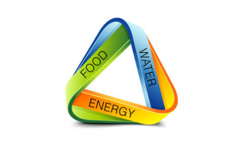
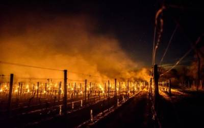
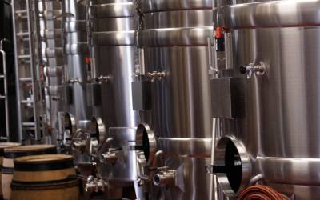
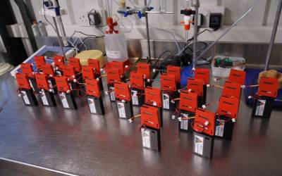

Bougies (Candles) to protect young grapes from spring frost damage
The WEFWEBs project examines the data and evidence around the water, energy and food systems (including social, economic, political, institutional and environmental components) and their interactions and dependencies within the local, regional and national scales. The project will use case studies based in Oxford, the Tamar Estuary in Devon and in London to explore the interdependencies. The project works with food producers, retailers, utility companies, environmental agencies local authorities and the public to develop together new data and new understanding. Imperial’s focus is on the sensors and tools to allow stakeholders to understand their WefWeb and to be able to control it via automation. EPSRC (EP/N005600/1; awarded £1.4 million. Led by Professor Marian Scott, University of Glasgow. Partners: Imperial College London, UCL, University of Exeter, University of Oxford, Newcastle University, School of Oriental & African Studies, Rothamsted Research.
The WEFWEBs project examines the data and evidence around the water, energy and food systems (including social, economic, political, institutional and environmental components) and their interactions and dependencies within the local, regional and national scales. The project will use case studies based in Oxford, the Tamar Estuary in Devon and in London to explore the interdependencies. The project works with food producers, retailers, utility companies, environmental agencies local authorities and the public to develop together new data and new understandings.
Main Contributors
The WEFWEBs project examines the data and evidence around the water, energy and food systems (including social, economic, political, institutional and environmental components) and their interactions and dependencies within the local, regional and national scales. The project will use case studies based in Oxford, the Tamar Estuary in Devon and in London to explore the interdependencies. The project works with food producers, retailers, utility companies, environmental agencies local authorities and the public to develop together new data and new understandings.


Study on Precision Agriculture
Deploy an end-to-end wireless sensor system in Ridgeview Winery
- In order to capture the WEF nexus, we deploy a state-of-the-art wireless sensor system. 47 sensing devices and a PC-based base station have been deployed in the Ridgeview winery to capture the ambient information from Ridgeview since late 2016. A solar-powered device was also tested with the system to capture its own energy profile. This deployment can be regarded as an initial trail which helps us to establish a system that will capture the WEF information from both the in-door winery and our-door vineyards in 2017.
Initial study on non-invasive sensing
- According to our study, most of the current of-the-shelf non-invasive solutions are not directly applicable in industrial settings due to safety constrains. To this end, we have been studying potential solutions that can capture the WEF information without disturbing original settings.
Case study in Ridgeview winery
- We have studied the potential participants and have couple of visits to the winery to discuss the potential of precision agriculture under their settings. These discussions also help us to frame a workshop where the interaction between precision agriculture and WEF nexus is studied